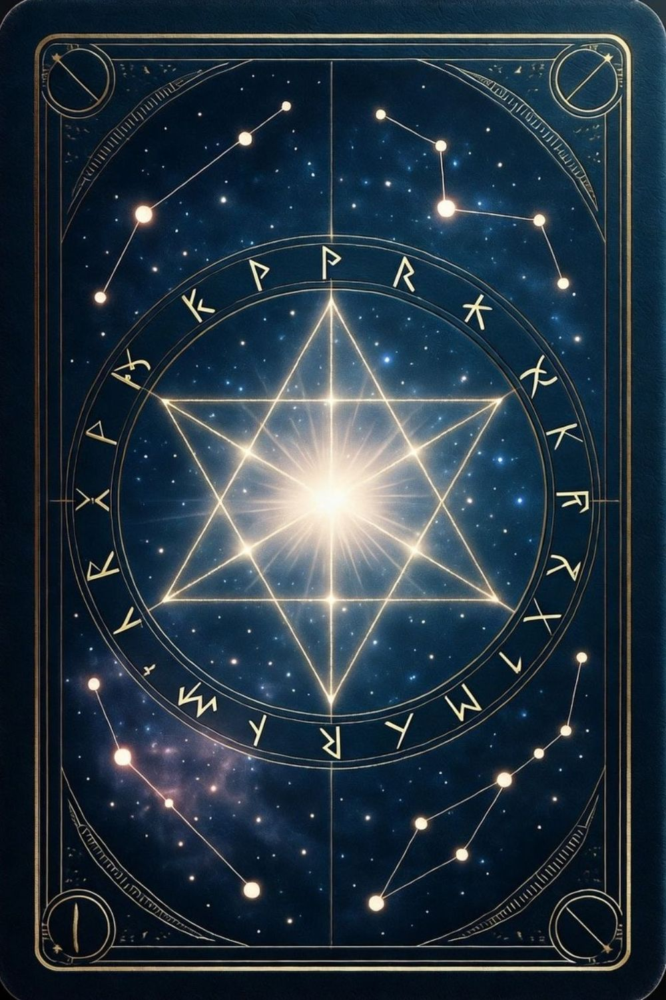

STEP 1
無料で星詠してみる
深呼吸をひとつして、「今の私に必要なメッセージ」を心の中で唱えてから、ボタンを押してください。
いまの自分にいちばん必要な言葉が、一枚のカードとして届きます。
詩韻の星詠
ただ当てるためではなく、今のあなたの本音をほどくためのリーディングです。 結果に少しでも心が動いたなら、その先にはもっと深く読める続きがあります。
STEP 2
今日あなたに降りるカード

星詠
待機中…
待機中…
SHION READING
この先を深く見るなら
この一枚が伝えているのは、今のあなたに最も強く届いているメッセージです。 ただ、相手の気持ち、今後の流れ、どう動けばいいかまで知りたいときは、個人鑑定でさらに丁寧に読み解けます。
NEXT READING
もう少しだけ深く、本音の奥まで受け取りたい方へ。
はじめての方も安心してご相談いただけます。無理な勧誘はありません。
「大丈夫だよ。」——最後は、あなた自身の選択が未来をひらいていきます。